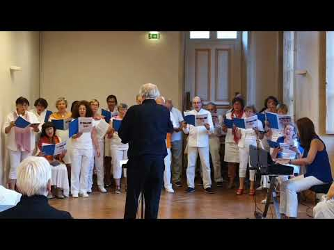

Haendel Happy – Extrait
Haendel Who calls – Extrait
La Nuit_Pauline Viardot_Chaville_2025-03-30 – Extrait
🎥 Nos vidéos YouTube
Découvrez notre dernier concert :
Voir sur YouTube
🎥

Chœur Accords Majeurs de Chaville en session au monastère Sainte Trinité de Bayeux - Hana Wa Saku
📁 Téléchargements
Télécharger le programme du concert (PDF)